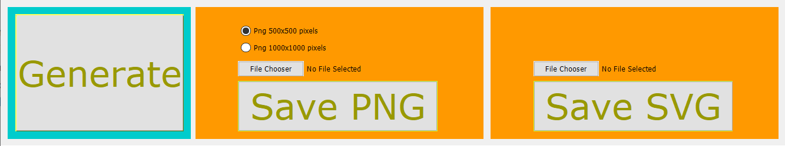

Live Preview
Ad ogni modifica dei punti di taglio del triangolo apparirà un'anteprima in live che mostra come sarà il fiocco generato.

Bottom Menu
Questo è il menu sottostante ai pannelli di anteprima del fiocco e della modifica dei punti di taglio. Qui possiamo trovare i 2 metodi di salvataggio presenti nell'applicazione, il fiocco infatti potrà venir salvato come immagine vettoriale (SVG) oppure anche come immagine PNG scegliendo tra le 2 risoluzioni di 500x500 px e 1000x1000px. Per entrambi i metodi di salvataggio è necessario prima di tutto scegliere il file di salvataggio utilizzando il bottone "File Chooser", troveremo il nome del file a fianco.